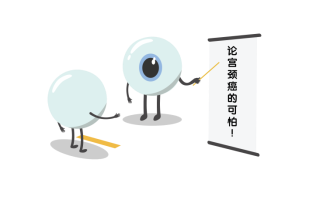

是什么让软妹子和女汉子都怕了？
身为新时代的新新女性，上得厅堂，下得厨房，杀得了木马，打得过流氓……简直无所不能！然而，不管是软妹子还是女汉子，在面对TA时，顿时气势全无。是什么让她们谈之色变？是什么让她们都怕了？是TA是TA就是TA，少年英雄小哪吒！哦不，女性杀手宫颈癌！
在介绍宫颈癌之前，首先我来为大家科普下癌症是什么。癌症，又叫恶性肿瘤，是由身体内的异常细胞过度生长和分裂引起的。当我们身体里的细胞受到环境中一些毒素长时间影响后，再加上自身免疫力减弱，我们体内就会出现一些不正常的细胞。这些不正常的细胞生长能力特别强，生长速度特别快，没有控制地生长就形成了肿瘤。其中恶性的肿瘤，就是我们通常所说的癌症。癌症的恶性细胞更容易扩散出去，用外科手术切除后，部分病人依旧有复发的风险。

宫颈癌，就是发生在宫颈的恶性肿瘤，是最常见的恶性肿瘤之一。在全球、在中国，无数女性正在遭受它的折磨。有数据有真相，一起来看看它到底有多可怕！
2012年，全球新发宫颈癌52.8万例，有26.6万女性因此离开这个世界。这其中，80%的病例发生在发展中国家，并在有些国家中高居癌症死因第一位。
在中国女性生殖系统恶性肿瘤中，宫颈癌发病率和死亡率均位居第一。2012年，我国宫颈癌发病人数约为10万人，平均每天约274人被诊断为宫颈癌，每5分钟新发现一位宫颈癌患者。与此同时，死亡人数约为30,500例，平均每天约84人死于宫颈癌。
简直触目惊心！难怪很多女性看到它就怕了。宫颈癌为何可以如此嚣张？这与宫颈癌潜伏得深有着很大的关系。早期宫颈癌没有明显的症状和体征，这让很多女性放松了警惕，等到发觉时，基本已经是宫颈癌晚期了……这也是宫颈癌死亡率如此之高的原因所在。（所以，姑娘们还是要及早预防哦~）
不止如此，宫颈癌还严重影响女性的身心健康：
1．影响性生活——由于“接触性出血”，可能还伴有疼痛，宫颈癌患者会对性行为产生抗拒，影响“性”福生活；
2．可能造成不孕——如果需要切除子宫的宫颈或全部子宫，那宫颈癌患者就会部分或完全失去生育功能；
3．放化疗副反应多——恶心、呕吐、腹泻、便秘、心律失常、心力衰竭、皮炎、脱发等等；
4．备受心理问题困扰——很多宫颈癌患者会情绪不稳定、异常敏感，对自己的家庭、事业和预后产生深深的担忧……
宫颈癌来势汹汹，在早期也没有明显的征兆，所以，不管你是软妹子还是女汉子，一定要及早做好预防工作，不要等到宫颈癌找上你后再追悔莫及哦~
Ref：
1.王建璋。防癌抗癌知识问答。养生大世界B刊，2005年第5期: 47-8.
2.中国实用妇科与产科杂志
3.Chen WQ, et al. CA Cancer J Clin. 2016 Mar-Apr;66(2):115-32.
4.http://www.who.int/mediacentre/factsheets/fs380/zh/